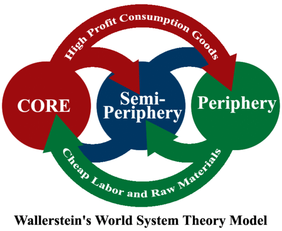
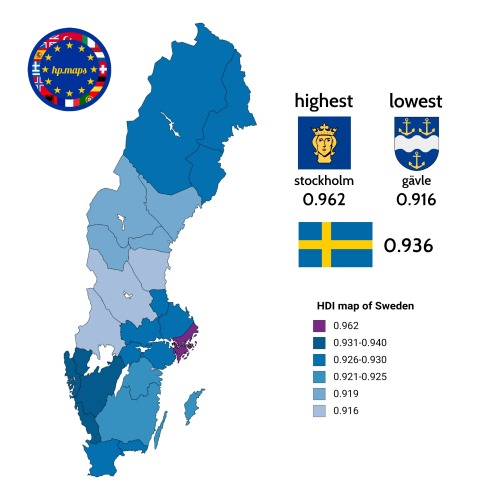
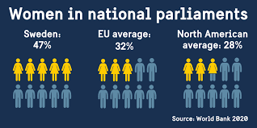
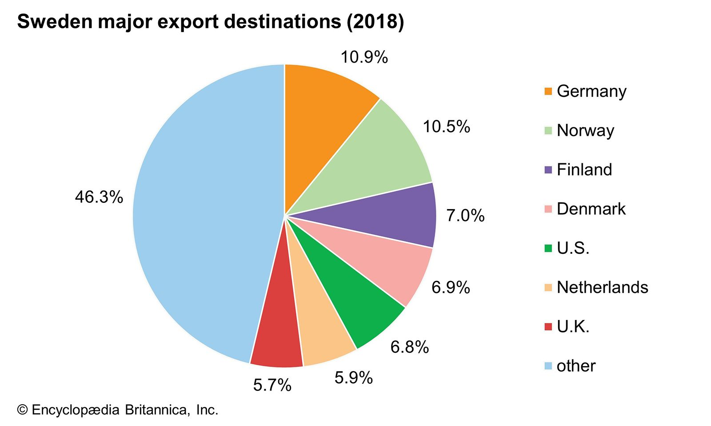

Wallerstein's Theory of Economic Development
Wallerstein's World Economic theory classifies three types of countries. Core countries are countries that do a lot of importing raw materials and exporting goods and services to other countries. Periphery countries are the polar opposite of core countries and are often less developed as their main economy is from trade with core countries. Semi-periphery countries are somewhere inbetween those two from more exporting to more importing mostly just inbetweens that do both. Sweden is a core country.
Country Statistics
GDP & GNI: Gross Domestic Product is the total value of goods and services produced within a countries boundaries each year, Swedens GDP is 660.9 billion USD. GNI is slightly different with it being the total value of goods and services produced by the country (not just in it's borders), Swedens GNI is 582.5 Billion USD.
Income Distribution: Income distribution is simply how the GDP of a country is distributed throughout the population. Swedem has the highest economic inequality of any of the nordic countries due partially to an aging population.
Fertility Rates: The average number of children a woman will give birth to in her lifetime (in given country), Sweden's fertility rate is 1.67.
Infant Mortality Rates: The number of children who die from ages 1-6 months per 1000 live births, Sweden's is 2.1
Literacy Rates: The percentage of a population (above 15 years old) that can read and write to a basic degree, Sweden's is 99%
Human Development Index: A scale used to measure the development of a country using different factors, Sweden scores 7th on that list with a .945.
Gender Inequality
Gender Equality: The ability of both genders to equally be able to achieve economic and social power.
Gender inequality is measured by the GII (Gender Inequality Index) using three factors, empowerment, labor market %, reproductive health. Using GII charts Sweden ranks 3rd with a cool 0.039. Sweden Has 21 women in its government ranking with a tie for 2nd, 3rd, 4th place, This shows that Sweden is for the most part a very equal country. There is not much issue going around in Sweden regarding gender equality.
Rostow's Theory of Economic Growth
Rostow's Theory of Economic Growth is a growth pattern of countries explained by 5 stages. Stage 1 is traditional society which has more informal economy and low overall activity. Stage 2 is pre-conditions for takeoff, as a country prepares to rapidly grow economically they establish neccasary infrustructure to be able to grow. Stage 3 is takeoff, the rapid and extreme growth as a country's economy explodes lots of foriegn investment and political shifts very specialized economy. Stage 4 is drive to maturity where the economy diversifies and develops further. Stage 5 is high mass consumption where the economy moves more heavily into the tertiary sector and more international trade. Sweden fits the most into stage 4 of the theory as it's economy is fairly developed but is still steadily growing and shifting into the tertiary sector.

Comparative Advantage
Comparative Advantage: Where a country can produce a product faster/cheaper than its competing countries.
One of Sweden's main ways of making money is by extracting valuble resources(forestry, fishing, mining) for cheaper than other countries and exporting them, which accounts for 1/3 of their entire economy. The government has incentivised this with giving great benifits in jobs and also doing the extraction sustainably as not to upset anyone disrupting the workforce (and to keep the enviroment intact).
